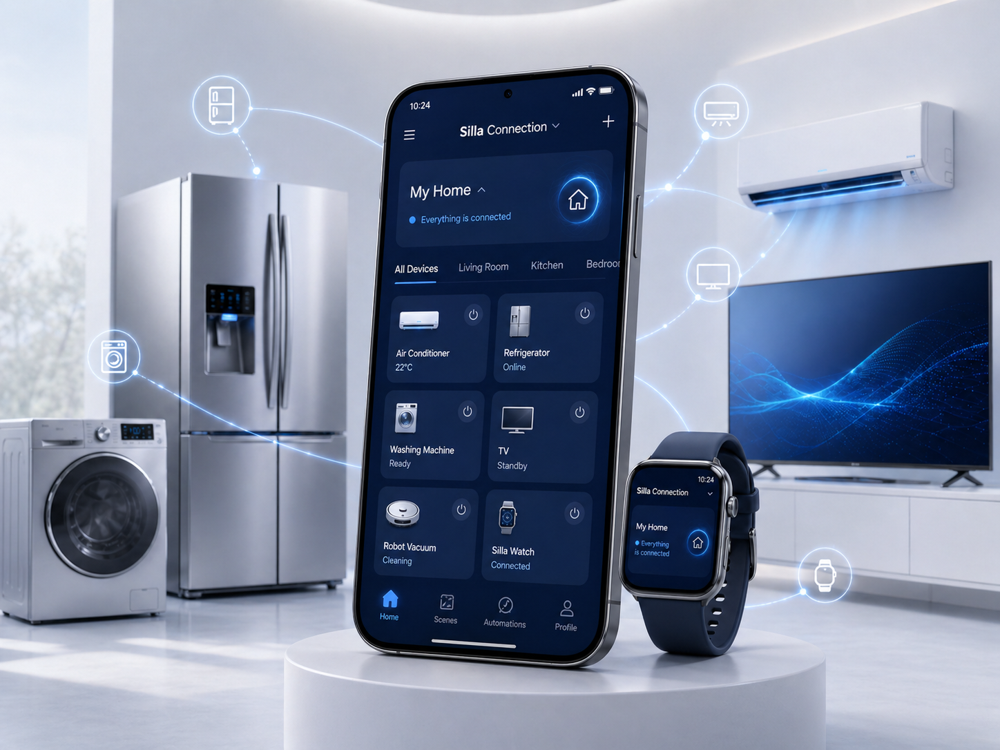

Silla Connection App
One app for every connected device.

제품을 하나로 연결하는 앱
Silla Connection App은 다양한 스마트 전자제품을 하나의 화면에서 확인하고 관리할 수 있도록 돕는 전용 앱입니다.
사용자는 생활가전, 모바일 디바이스, PC·디스플레이, 스마트홈 제품을 더욱 간편하게 사용할 수 있습니다.
App Features
- Device Control - 연결된 전자제품의 전원과 주요 기능을 간편하게 제어
- Status Check - 제품의 작동 상태와 사용 정보를 한눈에 확인
- Smart Notification - 제품 상태 변화와 완료 알림을 실시간으로 확인
- Connected Routine - 생활 패턴에 맞춰 여러 제품을 함께 작동하도록 설정